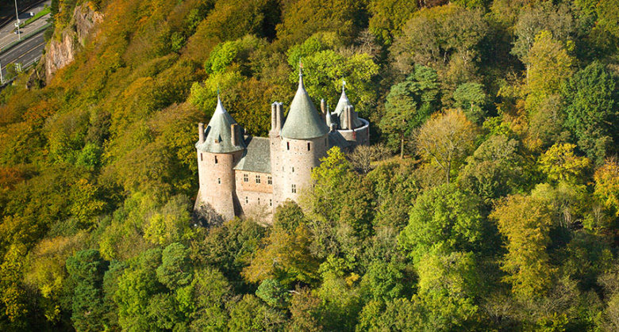
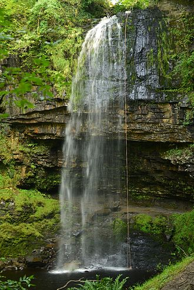
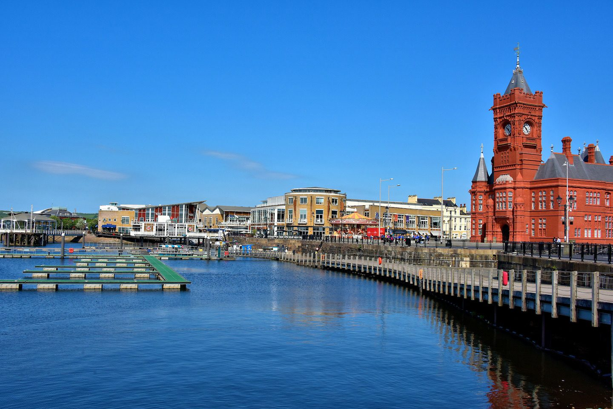

Top three activities to do at Cardiff
Castell Coch

On the outskirts of Cardiff, nestled in the countryside surrounded by the forest, sits one of Wales' beautiful fairytale castles. Castell Coch translates into red castle and is a 19th century gothic revival castle. It was rebuilt and restored in the late 1800's by William Bruges. This castle will not disappoint and is a must see.
Henrhyd Falls
For all the nature lovers visiting, a trip to the waterfall country should not be missed. Just a short drive outside of the city you will find that Wales has a diverse collection of waterfalls. One of the most iconic being Henrhyd Falls, here you can walk behind the stream of water and feel the spray on your face. Henrhyd Falls may look familiar to DC lovers as it was used for one of the scenes in the movie The Dark Knight Rises.

Cardiff Bay

At the end of a long busy day, Cardiff Bay is the perfect place to spend your late afternoons. Here, you can take a boat on a round trip from Mermaid Quay up the River Taff to Cardiff Castle. Spend your evenings dining in the many restaurants at the water's edge. Fancy some entertainment, there are arcades and bowling or you could watch a show in the Wales Millenium Centre.
Facts about Cardiff
- Cardiff is the capital city of Wales. However, it only became a capital in 1955, making it one of the newest capital cities.
- Cardiff is well known for its rugby and has hosted many games in The Millenium Stadium located in the heart of the city.
- Cardiff is one of Europe's smallest capital cities with a population of around 346,000.
- Cardiff is well known for its castles and claims to have more than any city in the world. Cardiff castle which is located in the capital dates back to the 11th century and was used as an air raid shelter during World War Two.
- Cardiff has produced its share of famous celebrities including the singer Shirley Bassey and the writer Roald Dahl.